6.Amino Acid Metabolism
Return to IntroductionPrevious:5.Protein Handling and Analysis
Next:7.How Enzymes Work
6.1.Protein Digestion, Absorption, and Putrefaction
Proteins (polypeptides) can be hydrolyzed into α-amino acids by acid hydrolysis, alkaline hydrolysis, or enzymatic hydrolysis, which represents complete hydrolysis. Incomplete hydrolysis results in the formation of peptides of varying sizes such as peptones and polypeptides. If the protein is a conjugated protein, the decomposition products also include prosthetic groups and ligands. The Ninhydrin method is commonly used to determine the degree of hydrolysis, which involves staining the hydrolysate of the test protein sample and a standard protein sample with Ninhydrin to measure the protein's degree of hydrolysis.
- Acid hydrolysis does not cause racemization of amino acids but destroys Trp. Asn and Gln are hydrolyzed to Asp and Glu, and hydroxylated amino acids (Ser, Thr, Tyr) are partially hydrolyzed. Therefore, after acid hydrolysis, the protein contains at most 17 different amino acids.
- Alkaline hydrolysis causes racemization (L-form amino acids are converted to D-form), and almost all amino acids are degraded, such as the breakdown of Arg into ornithine and urea.
- Enzymatic hydrolysis requires the coordinated action of multiple enzymes, with each enzyme responsible for cleaving different peptide bonds.
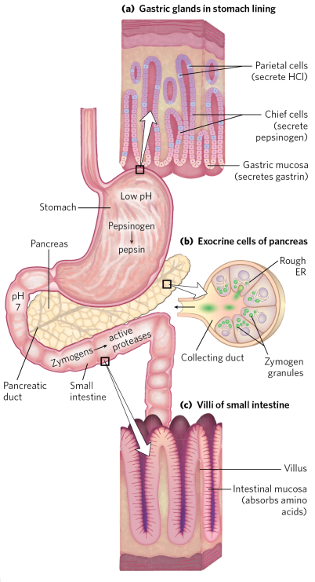
Proteins are utilized after being broken down in the human body. On one hand, this process can eliminate the antigenicity of proteins, thereby preventing allergic and toxic reactions. On the other hand, proteins are more easily absorbed after being broken down into amino acids. When food enters the stomach, it stimulates the secretion of gastric acid. In the highly acidic environment, pepsinogen in the stomach will undergo self-activation to become active pepsin. Under the action of pepsin, proteins in the food are initially hydrolyzed into polypeptide segments. The strongly acidic environment in the stomach also denatures proteins, exposing internal peptide segments, making them more accessible for breakdown. Undigested proteins enter the small intestine, where the pancreatic juice secreted by the pancreas contains various proteases, primarily divided into two categories: endopeptidases and exopeptidases. The former includes a series of enzymes that cleave internal peptide bonds, such as trypsin, chymotrypsin, and elastase, while the latter includes enzymes that cleave terminal peptide bonds, such as carboxypeptidase and aminopeptidase. After polypeptides are completely broken down into amino acids, they are absorbed by the epithelial cells of the small intestine.
| Enzyme | Specificity |
|---|---|
| Pepsin | Hydrolyzes peptide bonds formed between hydrophobic amino acids |
| Trypsin | Hydrolyzes peptide bonds formed by the -COOH end of Arg and Lys |
| Chymotrypsin | Hydrolyzes peptide bonds formed by the -COOH end of Phe, Tyr, and Trp |
| Elastase | Hydrolyzes peptide bonds formed by the -COOH end of aliphatic amino acids |
| Staphylococcal proteinase | Hydrolyzes peptide bonds formed by the -COOH end of Glu and Asp |
| Aminopeptidase | Sequentially hydrolyzes peptide bonds from the N-terminus |
| Carboxypeptidase | Sequentially hydrolyzes peptide bonds from the C-terminus |
When amino acids enter the intestinal cells, there are two transport mechanisms: active transport and passive transport, depending mainly on the concentration of the amino acids. For different types of amino acids, the epithelial cell membrane of the small intestine contains four transport pathways: neutral amino acid, acidic amino acid, basic amino acid, and amino acid transport systems. During amino acid transport, both Na+ pumps and non-Na+ pumps are involved. Amino acids that enter the epithelial cells of the small intestine can be transported to specific tissues for metabolism after entering the bloodstream. Amino acid metabolism in the body can be divided into two categories:
- Anabolic metabolism—synthesizes endogenous proteins and non-protein nitrogen-containing substances
- Catabolic metabolism—produces energy, synthesizes other active substances
Amino acids, undigested proteins, and polypeptides that have not been absorbed in the small intestine are anaerobically decomposed and utilized by intestinal microorganisms in the lower part of the colon. Some of the resulting products can be reused by the body, such as vitamins and fatty acids, but most of the products are harmful to the human body, such as toxic amines formed by the decarboxylation of amino acids, including cadaverine, putrescine, and some sulfides. Typically, these substances are excreted in urine or feces.
6.2.Intracellular Protein Degradation
6.2.1.Non-Energy-Dependent Lysosomal Degradation Pathway
The lysosome is a single-membrane organelle containing multiple proteases, acting as the "digestive system" of the cell. Due to its acidic environment, the proteases inside it exhibit optimal activity under acidic pH conditions. Therefore, in the neutral cytoplasmic environment, they become inactive, thus preventing the rupture of lysosomes and subsequent dissolution of the cell. Lysosomes mainly degrade exogenous proteins, membrane proteins, and long half-life proteins, and this degradation process does not require ATP.
6.2.2.Energy-Dependent Ubiquitin-Mediated Degradation Pathway
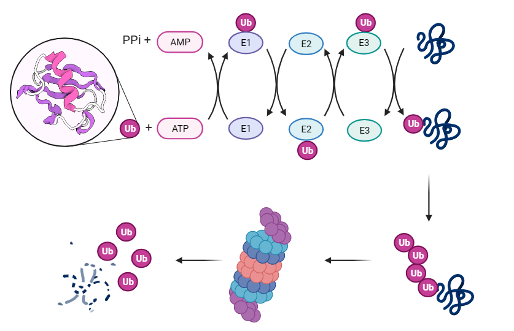
Ubiquitin is a basic protein composed of 76 amino acid residues. In the process of protein degradation, ubiquitin acts as a "tag," allowing tagged proteins to enter the proteasome for degradation. The hydrolysis targets of the ubiquitin degradation pathway are mainly abnormal proteins and key enzymes involved in metabolism with short half-lives. This degradation process involves three enzymes and requires ATP:
- E1 (ubiquitin-activating enzyme) consumes ATP to form a connection between its own -SH group and the -COOH group of ubiquitin, resulting in E1-ubiquitin.
- Subsequently, ubiquitin is transferred from E1 to the -SH group of E2 (ubiquitin-conjugating enzyme).
- Under the action of E3 (ubiquitin-protein ligase), ubiquitin is connected to the target protein, with the -COOH group of ubiquitin generally forming an "isopeptide bond" with the ε-NH2 of a Lys residue on the target protein.
- When a target protein is connected to a ubiquitin molecule, it is said to be monoubiquitinated, and at this stage, the protein cannot be degraded. Only when multiple ubiquitins are repetitively connected to the target protein through this process, this polyubiquitinated protein can be transferred to the proteasome for complete degradation.
6.3.Nitrogen Balance and Amino Acid Metabolic Pool
Nitrogen balance refers to a state in which the intake and excretion of nitrogen in the body reach equilibrium. For a healthy adult with normal nutrition, the body is in a state of nitrogen balance, indicating that the rate of protein breakdown and protein synthesis is balanced. To meet the daily metabolic needs of the body, proteins are continually being consumed and broken down within the body. Different individuals have different rates of protein consumption due to variations in physique, hence normal individuals need to intake proteins exceeding the minimum physiological requirement daily to maintain metabolic balance. Adolescents, pregnant women, and athletes need to consume proteins exceeding their physiological requirements daily to sustain normal physiological activities, thus they are in a state of positive nitrogen balance. Conversely, prolonged inadequate protein intake leads to a state of negative nitrogen balance.
Metabolic pool of amino acids refers to a storage pool of amino acids composed of amino acids produced from the breakdown of exogenous and endogenous proteins, and those synthesized de novo in the body. These amino acids, through a series of metabolic transformations, can participate in the synthesis of endogenous proteins and non-protein nitrogen-containing substances. In a healthy body, the metabolic pool is in a dynamic equilibrium state.
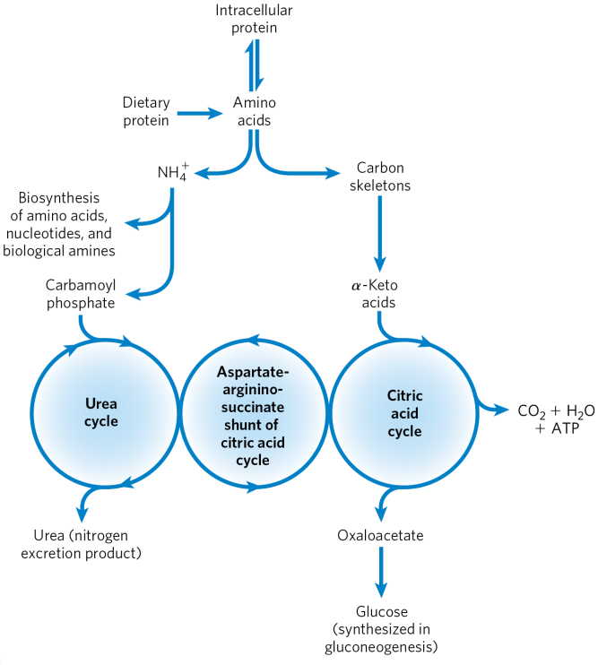
Food-derived exogenous proteins and endogenously generated proteins are broken down into amino acids. The resulting NH3 is further used to synthesize new amino acids, nucleotides, and other nitrogen-containing substances, or directly enters the urea cycle to form non-toxic urea for excretion. After deamination, the carbon skeleton transforms into certain α-keto acids, which enter the TCA cycle for complete catabolism, releasing ATP, or are used to synthesize new amino acids, ketones, or glucose.
6.4.Nitrogen Fixation in Living Organisms
Animals obtain free ammonia by breaking down exogenous and endogenous proteins in food. Plants can reduce nitrate and nitrite to ammonia. Moreover, certain microorganisms have the capability to fix nitrogen, converting atmospheric N2 into NH3.
Biological nitrogen fixation refers to the process wherein certain nitrogen-fixing microorganisms convert atmospheric N2 to NH3, which is then utilized by plants. There are two types of nitrogen-fixing microorganisms:
- Free-living nitrogen-fixing bacteria: nitrogen-fixing bacteria, nitrogen-fixing actinomycetes, and heterocystous cyanobacteria
- Symbiotic nitrogen-fixing bacteria: rhizobia that form symbiotic relationships with leguminous plants and Frankia that form symbiotic relationships with non-leguminous plants
Microbial nitrogen fixation requires specific conditions: ATP supply, NADPH supply for reducing power, and the involvement of nitrogenase. Nitrogenase consists of component Ⅰ (molybdenum-iron protein) and component Ⅱ (iron protein), and requires the participation of Mg2+. Since most nitrogen-fixing microorganisms are aerobic, the two components of nitrogenase become deactivated upon exposure to oxygen. Therefore, microbial cells usually employ specific anaerobic mechanisms to preserve the activity of nitrogenase. Three nitrogen fixation protection mechanisms are listed below:
- Respiratory protection: Cells rapidly consume oxygen by increasing respiration intensity.
- Conformational protection: Cells form a special conformation around nitrogenase to prevent its exposure to oxygen.
- Heterocyst protection in cyanobacteria: Heterocysts are specialized cells in cyanobacteria responsible for nitrogen fixation. They have high respiratory intensity, high catalase and SOD enzyme activities, and develop thick walls to prevent oxygen diffusion and protect nitrogenase.
After nitrogen fixation, NH4+ can react with Glu to form Gln under the action of glutamine synthetase, where it is stored and released when needed for cellular use.
6.5.Amino Acid Breakdown Metabolism
Many biological molecules ultimately need to be oxidized into small carbon skeletons to release energy for the body's use. Amino acids are the final class of substances that are broken down by oxidation to serve biological functions. In general, the body mainly obtains energy from the oxidation of glucose. In animals, amino acids undergo oxidative degradation under three different metabolic conditions:
- When some amino acids released during the process of protein breakdown are not used for the synthesis of new proteins, they will be oxidatively degraded.
- Excess intake of amino acids beyond the body's needs for protein synthesis will be oxidatively degraded.
- During prolonged starvation or severe diabetes, when glucose metabolism is impaired, amino acids are needed as "fuel" for oxidative degradation.
6.5.1.Deamination
(Ⅰ) Transamination
Under the action of transaminases, an amino group is removed from an amino acid and transferred to an α-keto acid. The former is transformed into the corresponding α-keto acid, and the latter is transformed into the corresponding amino acid. There are two main transaminases in the body: glutamic-oxaloacetic transaminase (GOT) and glutamic-pyruvic transaminase (GPT), and the reaction process is as follows. Transaminases require pyridoxal phosphate (PLP) as a coenzyme, which accepts the amino group removed to become pyridoxamine phosphate (PMP), releasing the -NH2 group to regenerate PLP and accept the next -NH2 group. The blood concentrations of GOT and GPT are important indicators of liver function tests. Both enzymes are present in the liver, and under normal circumstances, their concentrations in the blood are low. However, in cases of liver damage or liver diseases such as hepatitis, both enzymes leak from the liver into the bloodstream, resulting in elevated levels of GOT and GPT in the blood.
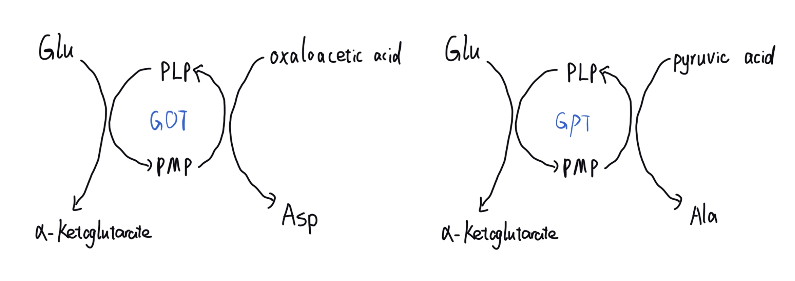
α-Ketoglutarate has a high affinity for NH3, so the amino acceptor in transamination reactions is usually α-ketoglutarate, leading to the synthesis of Glu. Except for Lys, Pro, and HyPro, all other amino acids in the body can undergo transamination.
(Ⅱ) Oxidative Deamination
Amino acids undergo deamination while undergoing oxidative dehydrogenation. Several oxidative deaminases exist in the body: L-amino acid oxidase, D-amino acid oxidase, and L-glutamate dehydrogenase. However, L-amino acid oxidase is present in very low amounts in the body and is almost inactive; D-amino acids are rare in the body, and D-amino acid oxidase also does not function. Therefore, L-glutamate dehydrogenase has the highest activity and specifically catalyzes the dehydrogenation and deamination of L-Glu, with the released [H] being accepted by NAD(P)+ to form NAD(P)H.
As a result, the final product of this reaction is α-ketoglutarate, which is an intermediate of the TCA cycle. Therefore, L-glutamate dehydrogenase is inhibited by ATP and CTP. It is activated by ADP and CDP.
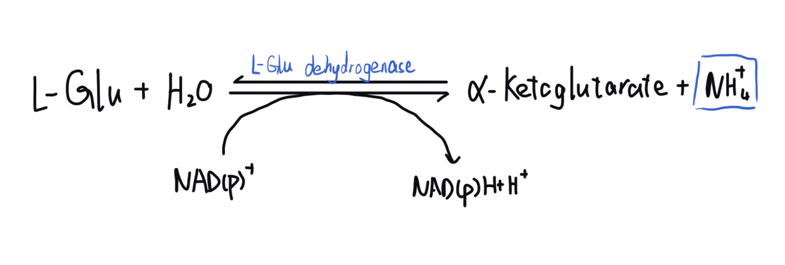
(Ⅲ) Coupled Deamination
Coupled deamination is the primary deamination method in the human body. It is divided into two types: coupled oxidative deamination with transaminases and L-glutamate dehydrogenase, and coupled deamination with purine nucleotide cycle.
- Coupled oxidative deamination with transaminases and L-glutamate dehydrogenase
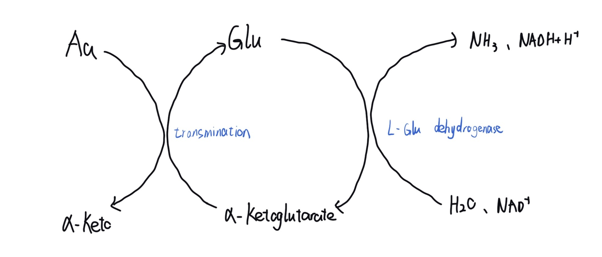
- Purine nucleotide cycle deamination
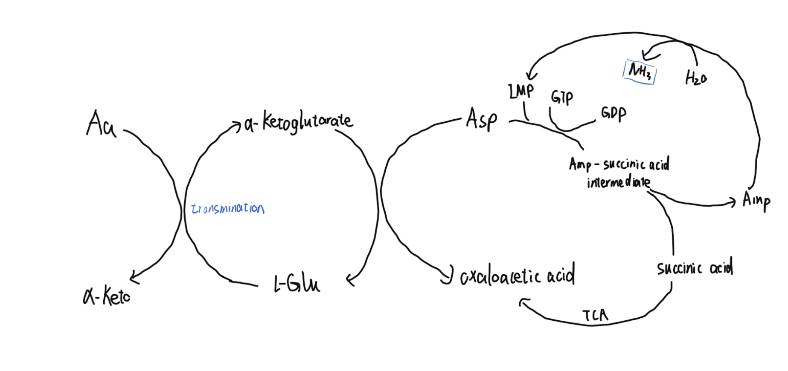
(Ⅳ) Non-oxidative Deamination
There are several non-oxidative deamination pathways, such as Ser and Thr undergoing dehydration deamination to synthesize pyruvic acid; Cys undergoing deamination under anaerobic conditions through the action of desulfhydrase, breaking down into pyruvic acid; Gln and Asn hydrolyzing to form Glu and Asp, releasing NH3.
(Ⅴ) Fate of NH3—Urea Cycle
In animals, there are several routes for the free ammonia released during amino acid breakdown metabolism, such as being used for Gln synthesis for storage, participating in purine and pyrimidine synthesis, and continuing to synthesize nonessential amino acids. In addition to this endogenous NH3, there is also NH3 produced from the breakdown of proteins and urea by intestinal microbial flora, as well as NH3 secreted by renal tubular epithelial cells in the kidneys from Gln hydrolysis. However, because free NH3 is toxic to the body, its primary route is to enter the urea cycle to be converted into non-toxic urea.
Urea cycle also known as the ornithine cycle, refers to the process in the body where toxic ammonia is successively transformed into non-toxic urea in the liver through five steps in the mitochondria and cytoplasm. In the first step of the reaction, catalyzed by carbamoyl phosphate synthetase I (CPS-I), free NH3 reacts with CO2, ATP, and H2O to form carbamoyl phosphate. In the second step, catalyzed by ornithine transcarbamylase, ornithine reacts with carbamoyl phosphate to form citrulline, which then enters the endoplasmic reticulum through a protein channel; the first two steps of the reaction occur in the mitochondria. In the third step, citrulline in the cytoplasm reacts with Asp, consuming 2 molecules of Pi to form argininosuccinic acid. In the fourth step, the latter decomposes into Arg and fumaric acid. The former is catalyzed by arginase to decompose into ornithine and urea, completing the fifth step. Ornithine returns to the mitochondria for the next cycle, while urea enters the kidneys from the liver and is excreted in the urine. The fumaric acid synthesized in the fourth step can be converted into malic acid in the TCA cycle, which can then be converted into oxaloacetic acid and Asp through the action of transaminase. The last three steps of the reaction occur in the cytoplasm, consuming a total of 4 high-energy phosphate groups (ATP).
The urea molecule contains one C element and two N elements, with the C derived from CO2 in the first step and the two N derived from free NH3 and Asp.
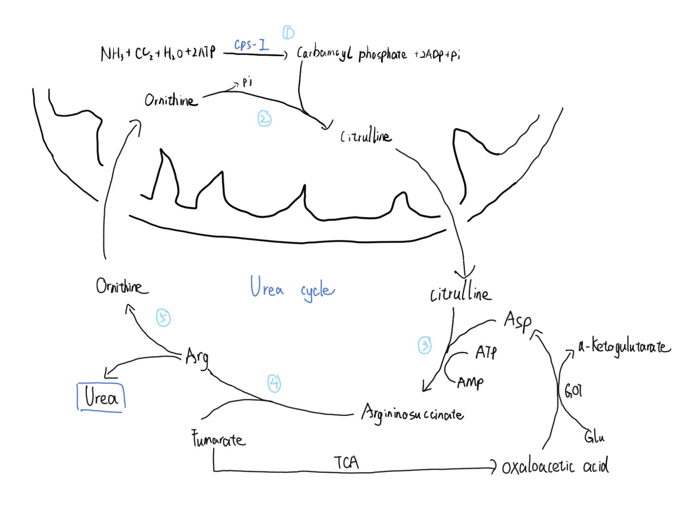
The first step of the urea cycle requires free NH3 and there are two ways in which NH3 is transported from the tissues to the liver:
- In various tissues, under the action of glutamine synthetase, Glu combines with free NH3, consuming ATP, to form Gln; the process of ammonia transport using Gln as a carrier is nontoxic to the human body. After Gln is transported into the liver, it is hydrolyzed to release NH3under the action of glutaminase.
- Glucose-Ala cycle pathway Similar to the lactate cycle pathway, glucose in the muscles is anaerobically oxidized to form pyruvic acid, which is directly transaminated to form Ala under the action of glutamic-pyruvic transaminase(GPT). After entering the liver via the bloodstream, Ala is again transaminated to form pyruvic acid. At this point, pyruvic acid can be gluconeogenically converted to glucose in the liver, which then returns to the muscles via the bloodstream; and the Glu synthesized after transamination releases NH3 through deamination.
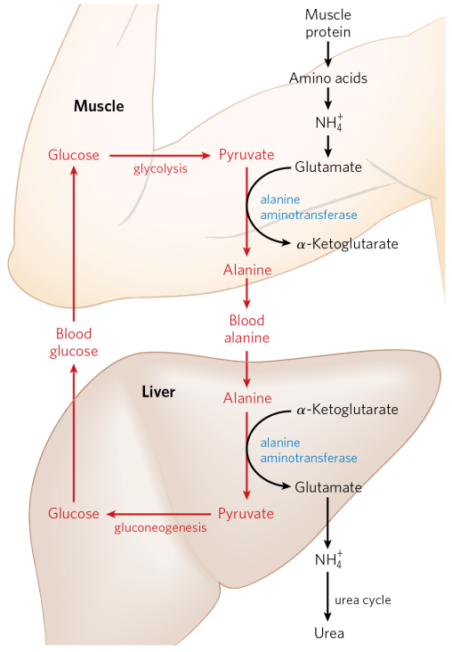
The key enzyme in the cycle is Carbamoyl Phosphate Synthetase I (CPS I), located in the mitochondria, which catalyzes the conversion of free NH3 to Carbamoyl Phosphate. CPS I and CPS II exist in the cell, and the following table lists their differences:
| (CPS I) | (CPS II) | |
|---|---|---|
| Location | Mitochondria | Cytosol |
| Involved | Urea cycle | Pyrimidine synthesis |
| N Source | Free NH3 | Gln |
| Allosteric Regulator | N-AcetylGlu activation | UMP allosteric inhibition |
Explanation of the allosteric activation mechanism of CPS I: When blood ammonia concentration is high, NH3 binds with α-ketoglutarate to generate a large amount of Glutamate (Glu), which further synthesizes N-Acetylglutamate (N-AcetylGlu) in the presence of N-Acetylglutamate Synthase. Therefore, the higher the concentration of N-AcetylGlu, the more it indicates the need for urea cycle to consume NH3 in order to prevent ammonia toxicity in the body. As a result, the activity of the key enzyme CPS I is activated.
Relationship between the urea cycle and TCA cycle:
The citrulline generated in the fourth step of the urea cycle can be converted to malate and then oxidized to oxaloacetate, and all three carbon skeletons can enter the TCA cycle, connecting the two cycles together.
The significance of the urea cycle:
Free NH3 is toxic to the body because α-ketoglutarate has a strong affinity for NH3, and high concentrations of NH3 will preferentially bind to α-ketoglutarate. α-ketoglutarate is an intermediate carbon skeleton in the TCA cycle, and its consumption will disrupt the normal energy metabolism of the TCA cycle, causing damage to tissues that require constant energy supply, such as brain and nerve tissues. This condition is known as ammonia toxicity. The urea cycle metabolizes toxic NH3 into non-toxic urea in the liver, which is then excreted by the kidneys to prevent ammonia toxicity. Hyperammonemia is a condition where one of the enzymes in the urea cycle is deficient, leading to the inability to convert NH3 into urea. Therefore, individuals with this condition cannot tolerate high-protein foods.
(VI) Fate of α-Keto Acids - Ketogenesis and Gluconeogenesis
After deamination, amino acids can form 7 carbon skeletons: Acetyl-CoA, Acetoacetyl-CoA, Pyruvate, α-ketoglutarate, Succinyl-CoA, Fumarate, and Oxaloacetate. They can directly enter the TCA cycle for complete oxidation and energy production, or they can be reaminated to synthesize new non-essential amino acids. They can also undergo gluconeogenesis to synthesize glucose or ketogenesis to produce ketone bodies.
Ketogenic amino acids refer to the carbon skeletons of certain amino acids after deamination, which are metabolically converted to Acetoacetyl-CoA, which further synthesizes ketone bodies. The main ketogenic amino acids are Leu and Lys.
Gluconeogenic amino acids refer to the carbon skeletons of some amino acids after deamination, such as Pyruvate, α-ketoglutarate, Succinyl-CoA, Fumarate, and Oxaloacetate, which enter the gluconeogenesis pathway to synthesize glucose, glycogen, and glycerol. Generally, except for ketogenic amino acids, all other amino acids can undergo gluconeogenesis.
Ambiguous amino acids refer to amino acids whose deaminated carbon skeletons can be converted to Acetoacetyl-CoA for ketone body synthesis and can also enter gluconeogenesis to synthesize glucose. The main ambiguous amino acids are Phe, Tyr, Trp, Ile, and Thr.
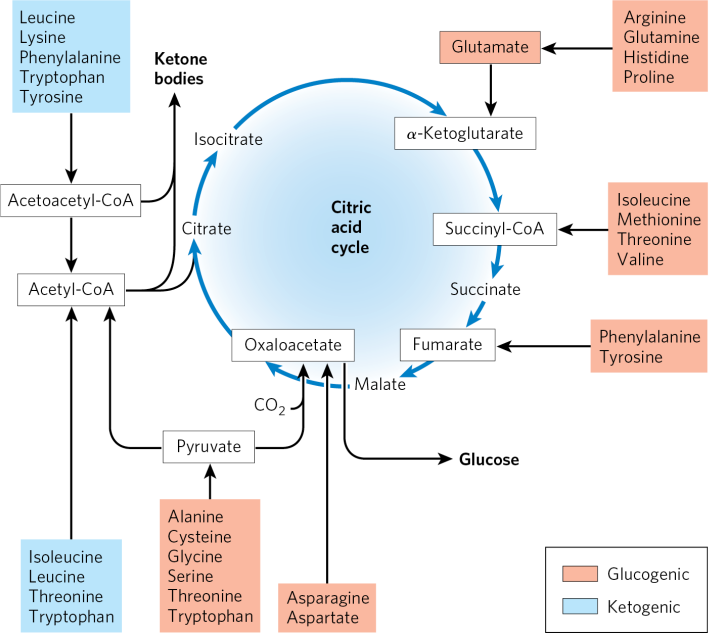
6.5.2.Decarboxylation
Under the action of decarboxylase, amino acids can lose their carboxyl groups to synthesize amines and CO2:
- Glu decarboxylation synthesizes γ-aminobutyric acid (GABA), which acts as an inhibitory neurotransmitter, relaxing the brain and is used to alleviate anxiety and promote sleep.
- Asp decarboxylation synthesizes β-Ala, which is one of the components for CoA synthesis.
- Orn decarboxylation synthesizes putrescine, and Lys decarboxylation synthesizes cadaverine, both of which are toxic amines that can cause food poisoning.
- His decarboxylation synthesizes histamine, which can lower blood pressure, dilate blood vessels, and is related to allergies.
- Tyr decarboxylation synthesizes tyramine, which can raise blood pressure.
- Ser decarboxylation synthesizes ethanolamine, which can be methylated to form choline, both of which are components of brain phospholipids and lecithin.
- Trp decarboxylation synthesizes indole-3-acetic acid and serotonin, with the former being a plant growth hormone and the latter being hydroxylated to form 5-hydroxytryptamine (5-HT), a neurotransmitter that can treat depression.
- Cys decarboxylation synthesizes taurine.
- Met decarboxylation synthesizes putrescine.
Decarboxylase also requires PLP as a coenzyme (except for histidine decarboxylase), and different decarboxylases have specificity and only catalyze the decarboxylation of the corresponding amino acids. The removed -COOH is converted to CO2, which can continue to participate in carboxylation reactions, or be exhaled from the body through respiration; the generated amine can further be oxidized to organic acids and participate in metabolic processes such as the TCA cycle.
6.5.3.Hydroxylation
Phe and Tyr belong to the aromatic amino acids. Before the breakdown metabolism, Phe needs to be hydroxylated to form Tyr under the action of phenylalanine hydroxylase. When phenylalanine hydroxylase is deficient, Phe cannot be converted to Tyr, and instead, Phe undergoes transamination with α-ketoglutarate to form phenylpyruvic acid. When the concentration of phenylpyruvic acid increases, it is excreted in the urine, leading to a condition known as phenylketonuria.
6.6.Metabolic transformations of amino acid families
6.6.1.Serine family amino acid metabolism
6.6.2.Aromatic amino acid metabolism
6.6.3.Alanine family amino acid metabolism
6.6.4.Aspartate family amino acid metabolism
6.6.5.Glutamate family amino acid metabolism
6.6.6.Histidine metabolism
6.7.One-carbon Unit Metabolism
In amino acid metabolism (including nucleotide metabolism), three coenzymes play important roles: pyridoxal phosphate(PLP) participates in transamination and decarboxylation processes; tetrahydrofolate(FH4) is responsible for transferring one-carbon units such as methyl and formyl groups; S-adenosylmethionine(SAM) is responsible for direct transfer of methyl groups.
6.7.1.Tetrahydrofolate and One-carbon Units
One-carbon unit refers to a group containing one C element, which is removed in certain amino acid metabolic processes, such as methyl (-CH3), methylene (=CH~~), formyl (-CHO), or formimino (NH=CH-). One-carbon units cannot exist independently from carriers and distinguish from one-carbon compounds (CO, CO2).
For mammals, folate, also known as vitamin B11, functions as a vitamin. It is reduced to dihydrofolate (FH2) and then tetrahydrofolate (FH4) by dihydrofolate reductase, and FH4 serves as a carrier for one-carbon units. Through redox reactions and binding to N5 or N10 of FH4, or both, various forms of carbon donors are generated in the following ways:
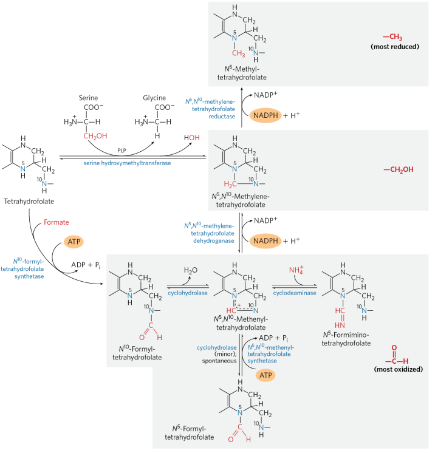
The amino acids that can release one-carbon units are Ser, Thr, Gly, His, and Trp. As shown in the figure above, under the action of hydroxymethyltransferase, Ser transfers a methyl group to FH4 to form N5,N10- methylene tetrahydrofolate, followed by redox reactions. The involvement of each form in carbon supply will be explained in the chapter on nucleotide metabolism.
One-carbon units have the following physiological significance:
- After being carried by FH4, one-carbon units can participate in the synthesis of pyrimidine and purine nucleotides, playing an important role in nucleic acid synthesis, and are closely related to cell growth, proliferation, and differentiation.
- One-carbon units closely link the metabolism of amino acids and nucleotides. One-carbon units are produced by the decomposition of amino acids and also participate in the synthesis of nucleotides.
6.7.2.Methionine Cycle
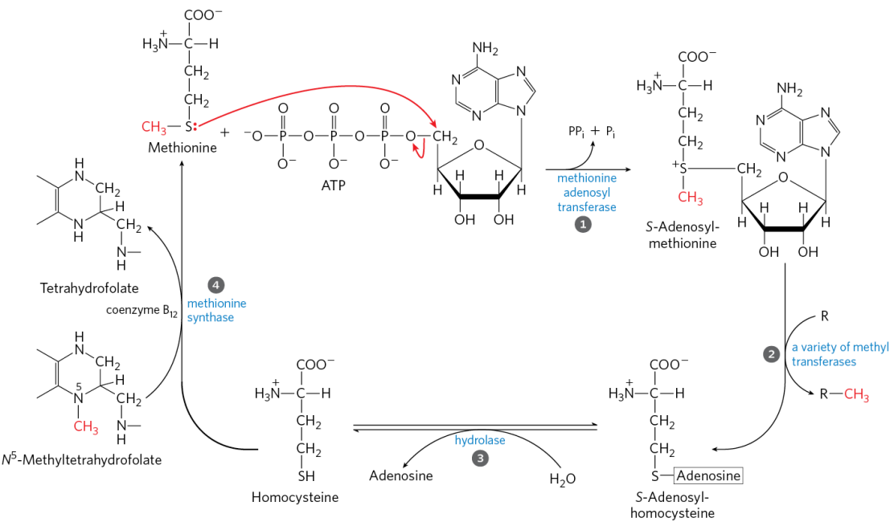
In addition to N5-methyl tetrahydrofolate, S-adenosylmethionine (SAM) also extensively participates in methylation reactions. SAM is synthesized by the reaction between Met and ATP under the action of methionine adenosyltransferase. Methylation reactions that are primarily provided by SAM include the synthesis of creatine from Arg and Gly; the synthesis of choline from ethanolamine; the synthesis of epinephrine from norepinephrine; and the methylation of certain specific bases. After transferring its own methyl group, SAM becomes S-adenosylhomocysteine, which is then cleaved into homocysteine and ultimately regenerated to Met by the action of methionine synthase, with methylcobalamin derived from VB12 as a cofactor. This process also regenerates FH4 from N5-methyl tetrahydrofolate.
6.8.Amino Acid Preparation
6.8.1.Chemical Synthesis
Amino acids can be synthesized using organic synthesis methods. However, the synthesized amino acids are a mixture of D- and L-amino acids, and it is not easy to extract the desired L-amino acids from this mixture.
6.8.2.Protein Hydrolysis
Amino acid mixtures are obtained by acid hydrolysis, alkaline hydrolysis, or enzymatic hydrolysis of protein or materials containing protein, followed by obtaining target amino acids through ion exchange chromatography, isoelectric point precipitation, and other methods.
6.8.3.Microbial Fermentation：Glutamic Acid Fermentation
Fermentation bacteria: Corynebacterium glutamicum
G+, non-spore-forming, non-motile, obligate aerobe
Several pathways for glutamic acid production (mainly the first pathway):
Fermentation mechanism:
Bacterial growth phase: Due to the TCA cycle being blocked, the strain mainly produces energy through the glyoxylate cycle to ensure normal metabolic flow.
Bacterial metabolic phase: Glucose is converted into pyruvate via EMP and HMP (the ratio of which is determined by the amount of biotin), and half of the pyruvate is oxidatively decarboxylated to form Acetyl-CoA while the other half is converted to oxaloacetate. The two converge to form citrate, which enters half of the TCA cycle, and ultimately the metabolic flow turns at α-ketoglutarate and flows towards glutamic acid (Glu).
Regulation mechanism during bacterial metabolic phase:
Strong activity in pyruvate carboxylation: because the pathway requires the synthesis of Glu to be truncated at α-ketoglutarate, it is necessary to use the pyruvate carboxylation pathway to synthesize oxaloacetate to ensure that the pathway proceeds normally.
Weak activity in isocitrate lyase: The glyoxylate cycle is a process of consuming carbon skeletons. In order to ensure the yield of Glu, it is necessary to truncate the glyoxylate cycle.
Strong activity in isocitrate dehydrogenase: To ensure that the carbon flow flows abundantly towards Glu.
Weak activity in α-ketoglutarate dehydrogenase: The activity of this enzyme is very weak or directly knocked out to ensure that the carbon flow flows towards Glu. Moreover, when the concentration of NH4+ is high, it will inhibit the activity of α-ketoglutarate dehydrogenase.
High activity in Glu dehydrogenase: The isocitrate dehydrogenase needs NADP+, which synthesizes NADPH, which is the specificity coenzyme of Glu dehydrogenase, a typical coenzyme cycle process.
High permeability of cell membrane to Glu: To ensure the rapid release of Glu, reduce the inhibition of Glu dehydrogenase, and reduce the possibility of Glu being consumed by other reactions. Specific measures include:
- Biotin-deficient type and suboptimal biotin
- Oleic acid-deficient type and suboptimal oleic acid
- Glycerol-deficient type and suboptimal glycerol
- Adding high-level saturated fatty acids
- Adding surfactants
- Penicillin wall-breaking
Preferential synthesis of Glu over Asp: After excess Glu is synthesized, it will inhibit and block its own synthesis pathway, making the metabolic flow turn to the Asp synthesis pathway.
Breeding strategies for glutamic acid high-yield bacteria metabolic control:
- Breeding strains that are resistant to high concentrations of Glu: Strains that can tolerate high concentrations of Glu can eliminate the feedback effect of Glu on the synthesis pathway.
- Breeding strains that do not use Glu: Strains that do not grow on Glu as the sole carbon source on a plate indicate that the strain no longer uses Glu.
- Improving the method of transporting nutrients into cells: Replace non-PTS with PTS.
- Breeding strains that strengthen energy metabolism: Accelerate the metabolism of the front half of the TCA cycle and promote Glu production.
- Breeding strains with high cell membrane permeability: Temperature-sensitive mutant strains (growth at 30℃, fermentation at 37℃).
- Breeding strains that weaken the glyoxylate cycle: Acetic acid is further metabolized to acetaldehyde. If the strain does not utilize acetic acid (does not grow on a plate with acetic acid as the sole carbon source), it indicates that the glyoxylate cycle is blocked.
If the Glu fermentation situation needs to be determined during the process, specific decarboxylases can be added, and the amino acid content can be detected by detecting the amount of CO2 using a Warburg respirometer.
The pH of the final fermented liquid is adjusted to the pI of Glu to allow Glu to precipitate.
6.9.Functions and Uses of Amino Acids
(I) Physiological Functions
- Synthesis of endogenous proteins.
- Metabolic synthesis of coenzymes (Trp synthesis of vitamin B3, β-Ala synthesis of vitamin B5).
- Participation in one-carbon unit metabolism or direct involvement in nucleotide biosynthesis processes (Ser, Thr, His, Gly, Trp).
- The deaminated carbon skeleton can be used for gluconeogenesis, glycerol synthesis, or converted into ketone bodies (ketogenic and glucogenic amino acids).
- The deaminated carbon skeleton enters the TCA cycle for complete oxidation and energy production.
- Metabolic synthesis of hormones and some active substances. Tyr can synthesize catecholamines, melanin, and thyroxine; Gly synthesizes heme; Arg, Gly, and SAM synthesize creatine; Glu, Cys, and Gly synthesize glutathione (GSH).
(II) Scientific Research
Amino acids are involved in the in vitro artificial synthesis of peptides and proteins, as well as studies on protein metabolism.
(III) Medicine
Amino acid mixtures can be injected into patients to supplement nutritional substances. Some amino acids have therapeutic effects on specific diseases. For example, Arg, Glu, and His have certain efficacy in treating liver diseases, while Cys has anti-radiation and treatment of cardiac dysfunction. Amino acids are precursors or intermediate raw materials in the synthesis of some peptide drugs, such as gastrin, oxytocin, antidiuretic hormone, and calcitonin.
(IV) Food
Certain amino acids can be used as flavor enhancers in food preparation. Monosodium glutamate (MSG) is a sodium salt of glutamic acid used as a food flavor enhancer. Other amino acids such as Asp, Gly, Ala, and His also have different savory tastes.
(V) Industry
In industrial production, by modifying the genetic network and metabolic pathways of fermentation strains, excellent strains that produce high levels of specific amino acids can be obtained to achieve large-scale production of target amino acid products, as mentioned in the previous section on glutamic acid fermentation.